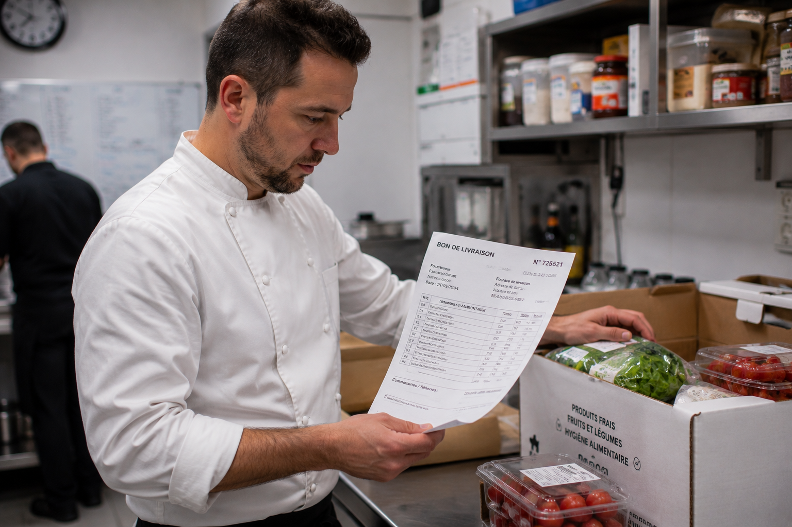

Traçabilité alimentaire en restauration 2026 : obligations légales, registres et mise en pratique
La traçabilité alimentaire est l’une des premières choses vérifiées lors d’un contrôle sanitaire — et l’un des points les plus souvent défaillants. Quels documents conserver, combien de temps, quelles informations tracer, comment afficher l’origine des viandes depuis le décret de février 2025, comment réagir à un rappel produit : ce guide détaille toutes vos obligations, avec des exemples concrets et des outils directement utilisables.

Traçabilité alimentaire : de quoi parle-t-on exactement ?
La traçabilité alimentaire, c’est la capacité de retracer le parcours d’un aliment à toutes les étapes — de sa réception en cuisine jusqu’à l’assiette du client. En cas de problème sanitaire, elle permet d’identifier en quelques minutes le produit concerné, son fournisseur, son numéro de lot, et tous les plats dans lesquels il a été utilisé.
Concrètement, pour un restaurateur, ça se traduit en deux obligations distinctes :
- Traçabilité amont : savoir qui vous a livré quoi, quand, et en quelle quantité. C’est l’essentiel — vous devez pouvoir répondre à la question « d’où vient ce produit ? » pour chaque ingrédient stocké dans votre cuisine.
- Traçabilité aval : si vous livrez d’autres professionnels (traiteur livrant des cantines, par exemple), vous devez savoir à qui vous avez vendu quoi. En restauration au détail (service direct au consommateur), cette obligation s’arrête à la remise au client final.
Les textes réglementaires en vigueur
La traçabilité alimentaire repose sur un empilement de textes européens et français. Voici les références que vous devez connaître :
| Texte | Ce qu’il impose | Applicable depuis |
|---|---|---|
| Règlement CE 178/2002, art. 18 | Obligation générale de traçabilité à toutes les étapes (socle fondateur) | 1er janvier 2005 |
| Règlement UE 931/2011 | Exigences renforcées pour les denrées d’origine animale (n° de lot, quantités) | 1er juillet 2012 |
| Règlement CE 852/2004 | Hygiène des denrées alimentaires, intégration de la traçabilité dans le PMS | 1er janvier 2006 |
| Règlement UE 1169/2011 | Information consommateur : allergènes, origine | 13 décembre 2014 |
| Décret n° 2025-141 | Affichage obligatoire de l’origine des viandes (bœuf, porc, ovin, volaille) | 14 février 2025 |
| Décret n° 2024-171 | Extension aux viandes transformées ou utilisées comme ingrédients | 7 mars 2024 |
| Code rural, art. L237-3 | Sanctions pénales en cas de manquement grave à la sécurité alimentaire | — |
Le règlement CE 178/2002 reste le texte fondateur. Il n’a pas été révisé en 2025-2026, mais son application est précisée par les textes d’exécution nationaux.
Quelles informations tracer et comment
Le règlement CE 178/2002 pose le principe, le règlement UE 931/2011 le complète pour les produits animaux. Voici ce que vous devez concrètement enregistrer à chaque livraison :
Données obligatoires pour toutes les denrées
| Information | Source | Où la trouver |
|---|---|---|
| Nom et adresse du fournisseur | Règlement CE 178/2002 | Bon de livraison, facture |
| Nature / description des produits | Règlement CE 178/2002 | Bon de livraison |
| Date de livraison (ou de transaction) | Règlement CE 178/2002 | Bon de livraison |
Données supplémentaires pour les denrées d’origine animale
| Information | Source |
|---|---|
| Numéro de lot ou de référence du chargement | Règlement UE 931/2011 |
| Description précise (espèce, catégorie, présentation) | Règlement UE 931/2011 |
| Volume ou quantité livrée | Règlement UE 931/2011 |
| Nom et adresse de l’expéditeur (si différent du fournisseur) | Règlement UE 931/2011 |
Données fortement recommandées (exigées dans le PMS)
- DLC ou DDM de chaque référence
- Température à réception (relevé sur la fiche de contrôle à réception)
- N° de lot de chaque référence (même pour les produits non animaux)
- Conformité de l’état des emballages
Durées de conservation des documents
C’est l’un des points les plus mal compris. La durée dépend du type de produit :
| Type de produit | Durée minimale | Exemples |
|---|---|---|
| Produits à DLC < 3 mois (ou sans date limite) | 6 mois après livraison | Viandes fraîches, poissons, produits laitiers, œufs, légumes frais |
| Produits standard (cas général) | 5 ans après livraison | Produits secs, surgelés, conserves, épices, huiles |
| Produits à DDM > 5 ans | DDM + 6 mois | Certaines conserves, vins |
En restauration, la grande majorité des produits sont frais et consommés rapidement : la règle des 6 mois couvre donc la plupart des situations. Mais attention aux produits secs et conserves : c’est 5 ans.
Quels documents conserver ?
- Bons de livraison (avec date, fournisseur, nature et quantité des produits)
- Étiquettes fournisseurs (numéro de lot, DLC/DDM)
- Fiches de contrôle à réception (températures, conformité)
- Fiches de non-conformité (refus de marchandise, anomalies)
- Relevés de températures des équipements frigorifiques

Origine des viandes : les règles d’affichage (décret 2025)
Le décret n° 2025-141 du 13 février 2025 a pérennisé et unifié l’obligation d’afficher l’origine des viandes en restauration. Voici ce qui s’applique désormais :
| Espèce | Obligation | Informations à afficher |
|---|---|---|
| Bœuf | Obligatoire | Pays d’élevage + pays d’abattage |
| Porc | Obligatoire | Pays d’élevage + pays d’abattage |
| Ovin (agneau) | Obligatoire | Pays d’élevage + pays d’abattage |
| Volaille | Obligatoire | Pays d’élevage + pays d’abattage |
Où afficher ? Sur la carte, le menu, ou un affichage visible en salle. L’information doit être « lisible et visible » pour le consommateur.
Viandes transformées : depuis le décret n° 2024-171 (7 mars 2024), les viandes achetées déjà préparées ou cuisinées, utilisées comme ingrédients dans vos plats, sont également soumises à l’obligation d’affichage de l’origine.
Préparations maison et étiquetage interne
Tout ce que vous préparez en cuisine et conservez avant service doit être étiqueté. C’est une exigence de votre PMS et un point systématiquement vérifié par les inspecteurs DDPP.
Contenu minimum de l’étiquette interne
- Dénomination du produit : « Sauce bolognaise », « Fond de veau », « Brunoise de légumes »
- Date de fabrication : jour de préparation
- DLC interne : fixée selon vos procédures HACCP (généralement J+3 pour les plats cuisinés réfrigérés)
- Conditions de conservation : température de stockage
Pour les produits entamés (fromage coupé, boîte de conserve ouverte, viande déconditionnée), appliquez la même logique : étiquette avec date d’ouverture et DLC interne.
Traçabilité et allergènes : le lien indispensable
La gestion des allergènes en restauration (décret n° 2015-447, transposant le règlement UE 1169/2011) repose entièrement sur votre traçabilité. Sans connaître la composition exacte de chaque ingrédient, impossible de garantir l’information aux clients.
Concrètement, la traçabilité des allergènes implique :
- Fiches techniques fournisseurs : exigez systématiquement la liste complète des ingrédients et la déclaration des 14 allergènes majeurs pour chaque référence achetée.
- Fiches recettes internes : chaque fiche recette doit lister les allergènes présents dans le plat, en croisant les fiches techniques fournisseurs avec les ingrédients utilisés.
- Mise à jour : quand un fournisseur change la composition d’un produit, la fiche recette doit être actualisée immédiatement.
L’information allergènes peut être communiquée oralement au client ou par affichage, mais elle doit être documentée et traçable dans votre PMS.
Notre checklist HACCP gratuite couvre la traçabilité, les températures, le nettoyage et la réception de marchandises — en une seule fiche imprimable.
Télécharger la checklist →Retrait et rappel : la procédure en cas d’alerte sanitaire
Quand un fournisseur vous signale un problème sur un lot, ou que vous recevez une alerte via RappelConso, votre réaction doit être immédiate. Le règlement CE 178/2002 (articles 19-20) impose une obligation de réaction « sans délai ».
Les 6 étapes de la procédure
- Isoler immédiatement le produit concerné dans tous vos espaces de stockage. Identifiez-le clairement (étiquette « NE PAS UTILISER »).
- Identifier le lot grâce à vos documents de traçabilité (bon de livraison, étiquette fournisseur).
- Vérifier l’utilisation : le produit a-t-il déjà été servi ? Dans quels plats ?
- Notifier la DDPP dans un délai d’un jour ouvrable (par écrit ou voie électronique).
- Déclarer sur RappelConso (rappel.conso.gouv.fr) si vous avez redistribué le produit à d’autres professionnels.
- Documenter toutes vos actions correctives dans votre PMS.
La loi EGAlim (2018) a renforcé ces obligations : vous devez conserver un inventaire des produits retirés et, le cas échéant, un affichage minimum de 15 jours pour les consommateurs concernés.
Papier ou numérique : les outils de traçabilité
La réglementation n’impose aucun format. Un classeur papier est parfaitement légal, tant qu’il est complet et à jour. Mais les outils numériques offrent un avantage décisif en cas d’alerte sanitaire : la rapidité de recherche.
| Critère | Papier (classeur) | Numérique (application / tableur) |
|---|---|---|
| Coût | Quasi nul | 0 € (tableur) à 50-150 €/mois (applis spécialisées) |
| Recherche d’un lot | Feuilletage manuel — 15 à 30 min | Recherche instantanée |
| Risque de perte | Élevé (incendie, eau, désordre) | Faible (sauvegarde cloud) |
| Perception DDPP | Accepté | Valorisé |
| Adapté pour | Petits établissements (1-2 livraisons/jour) | Établissements avec volume de réceptions important |
Organisation papier efficace
Si vous restez au papier, organisez votre classeur en 3 sections :
- Bons de livraison : classés par date (le plus récent devant)
- Fiches de contrôle à réception : une fiche par livraison (température, état, conformité)
- Non-conformités : fiches de refus ou de retour de marchandises
Solutions numériques
Les applications HACCP dédiées à la restauration (Octopus, Epack Hygiène, TraqFood, SnapCheck…) intègrent la traçabilité avec les relevés de températures, le plan de nettoyage et la gestion des allergènes dans un même outil. Le coût varie de 30 à 150 €/mois selon la taille de l’établissement.
Sanctions en cas de défaut de traçabilité
Les sanctions sont progressives, du simple avertissement aux poursuites pénales :
| Manquement | Sanction | Base légale |
|---|---|---|
| Défaut d’affichage de l’origine des viandes | 1 500 € (3 000 € récidive) — personne physique 7 500 € (30 000 € récidive) — personne morale |
Code de la consommation, art. R. 451-1 |
| Registres de traçabilité absents ou incomplets | Contravention de 5e classe : jusqu’à 1 500 € (personne physique) | Code rural, art. R237-2 |
| Mise en danger de la santé publique (non-conformité grave) | Jusqu’à 2 ans de prison + 300 000 € d’amende | Code rural, art. L237-3 |
| Atteinte grave à la santé (intoxication collective) | Jusqu’à 5 ans de prison + 600 000 € d’amende | Code rural, art. L237-3 |
En plus des amendes, le préfet peut ordonner la fermeture administrative de l’établissement en cas de danger grave et imminent (Code rural, art. L231-6). La fermeture dure jusqu’à la mise en conformité complète, vérifiée par une contre-visite.
Questions fréquentes sur la traçabilité alimentaire
Combien de temps conserver les bons de livraison en restauration ?
Pour les denrées fraîches à DLC inférieure à 3 mois (viandes, produits laitiers, plats préparés), conservez les bons de livraison au minimum 6 mois après la date de livraison. Pour les produits secs, surgelés ou en conserve, la durée passe à 5 ans. En pratique, la règle des 6 mois couvre la grande majorité des produits utilisés en restauration, car ils sont consommés rapidement.
Quelles informations doivent figurer sur un registre de traçabilité ?
Le règlement CE 178/2002 impose au minimum : le nom et l’adresse du fournisseur, la nature des produits livrés et la date de livraison. Pour les denrées d’origine animale (règlement UE 931/2011), il faut ajouter le numéro de lot, la quantité livrée et la description précise. En pratique, notez aussi la DLC/DDM et la température à réception.
L’affichage de l’origine des viandes est-il obligatoire en restauration ?
Oui, depuis le décret n° 2025-141 du 13 février 2025, l’affichage de l’origine est obligatoire pour les quatre espèces principales : bœuf, porc, agneau et volaille. Vous devez indiquer le pays d’élevage et le pays d’abattage de manière lisible et visible sur la carte, le menu ou un affichage en salle. L’amende pour défaut d’affichage est de 1 500 € (3 000 € en récidive).
Que faire en cas d’alerte sanitaire sur un produit déjà en cuisine ?
Réaction immédiate : isolez le produit concerné, identifiez le lot via vos documents de traçabilité, vérifiez s’il a déjà été utilisé, et notifiez la DDPP dans un délai d’un jour ouvrable. Depuis 2021, déclarez aussi le retrait sur la plateforme RappelConso. Documentez toutes vos actions correctives dans votre PMS.
Un registre papier est-il suffisant pour la traçabilité ?
Oui, la réglementation n’impose pas de format numérique. Un classeur bien tenu avec les bons de livraison, les fiches de réception et les étiquettes fournisseurs est parfaitement légal. Cependant, les outils numériques facilitent la recherche rapide en cas d’alerte sanitaire et sont de plus en plus valorisés par les inspecteurs de la DDPP.
Comment étiqueter les préparations maison conservées au froid ?
Chaque préparation fabriquée en interne et conservée avant service doit porter une étiquette indiquant : la dénomination du produit, la date de fabrication, la DLC interne fixée selon vos procédures HACCP (généralement J+3 pour les plats cuisinés réfrigérés), et les conditions de conservation. Cet étiquetage fait partie intégrante de votre système de traçabilité.
Quelles sanctions pour un défaut de traçabilité en restauration ?
Les sanctions sont progressives : 1 500 € d’amende pour défaut d’affichage de l’origine des viandes, contravention de 5e classe pour des registres absents ou incomplets. En cas de mise en danger de la santé publique, les sanctions pénales peuvent atteindre 2 ans de prison et 300 000 €, voire 5 ans et 600 000 € si des atteintes graves à la santé sont constatées.